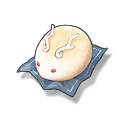

Loong Buns
Supplies

Increases the defense of all Resonators in the team by 20% for 30 minutes, only effective for the player's Character in multiplayer games.
A round bun with a dragon's horn, there are a variety of flavors. Huanglong people have a special feeling for dragons, and a plate is always placed on the table during the holidays. It is said that if you eat the whole thing, you will have good luck in the coming year.